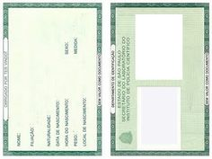

A carteira de identidade, comumente conhecida como RG (Registro Geral), é um documento de identificação
emitido pelos órgãos de segurança pública, como o Secretaria de Segurança Pública (SSP), o Instituto de
Identificação ou órgãos similares, dependendo do país.
A carteira de identidade tem como objetivo principal comprovar a identidade de uma pessoa, fornecendo
informações básicas, como nome, data de nascimento, filiação, nacionalidade, número de identificação, entre
outros dados relevantes. Além disso, geralmente inclui uma fotografia do titular.
O RG é amplamente utilizado como documento oficial para comprovar a identidade em várias situações, como
abertura de contas bancárias, obtenção de passaporte, realização de matrícula em instituições de ensino,
votação em eleições, entre outras atividades do dia a dia.

Ilustração de um RG
Qual a importancia do RG
Em resumo, a carteira de identidade desempenha um papel fundamental ao comprovar a identidade pessoal,
garantir direitos e acesso a serviços, facilitar transações e fornecer informações essenciais em situações
diversas.
É importante carregar consigo a carteira de identidade em várias ocasiões para evitar problemas e
garantir uma identificação adequada quando necessário.
Passo a Passo RG
Passo 1: Documentação necessária
Reúna os seguintes documentos para tirar o RG:
Documento de identidade anterior
CPF
Comprovante de residência
Foto recente 3x4
Passo 2: Agendamento
Agende o atendimento para emissão do RG no DETRAN ou órgão responsável em sua região.
Passo 3: Comparecimento ao atendimento
Compareça ao local(A solicitação pode ser feita em postos de atendimento, variando de estado para
estado.)
dia e horário agendados levando os documentos necessários.
Passo 4: Coleta de dados e foto
Nome completo: Nome e sobrenomes do titular da carteira de identidade.
Filiação: Nomes dos pais ou responsáveis legais do titular.
Data de nascimento: Data em que o titular nasceu.
Sexo: Gênero do titular (masculino ou feminino).
Nacionalidade: País de nacionalidade do titular.
Naturalidade: Cidade ou local de nascimento do titular.
CPF (Cadastro de Pessoa Física): Número do Cadastro de Pessoa Física do titular, quando aplicável.
Assinatura: Assinatura do titular da carteira de identidade.
Fotografia: Uma foto atualizada do titular.
Passo 5: Pagamento de taxa
Efetue o pagamento da taxa de emissão do RG conforme instruções fornecidas.
Essa taxa normalmente fica em torno de R$ 40,00 a R$ 80,00.
Passo 6: Retirada do RG
Após um período determinado, retorne ao local para retirar o RG pronto.